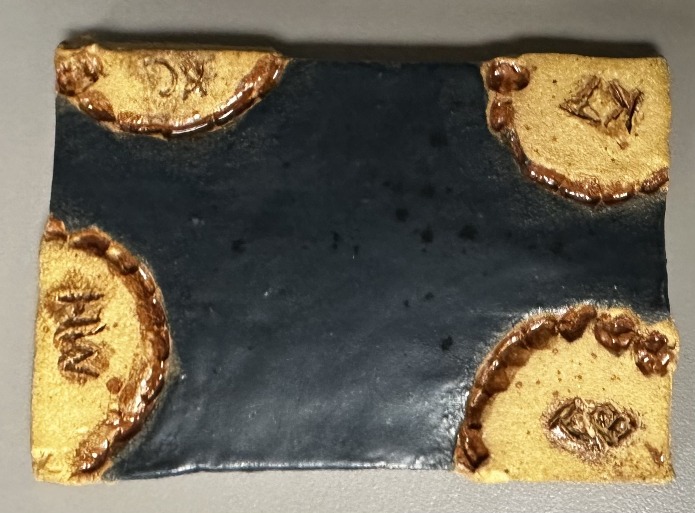

For this interactive assignment, I chose to use a piece of clay that my friends and I had previously bit into. It just so happened that we also recorded each of us biting into the clay, so it seemed like a perfect opportunity to show the process of creating the clay bite.
Below is a photo of the piece of clay that was bit into by the four of us.
Below is a photo of the breadboard and the buttons for this project. Each mouth plays a different girl's video.

Below are each girl's videos that were played on the projector when one of the buttons was pushed.
This video shows what the other videos looked like, stretched out on the projector.